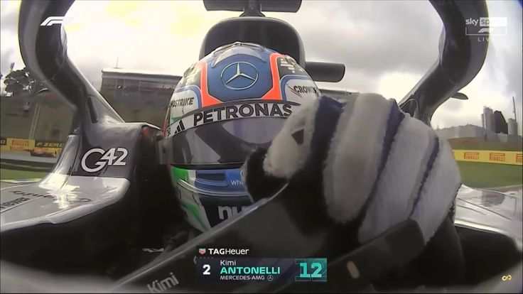
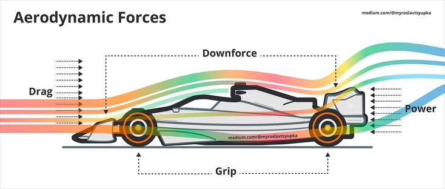
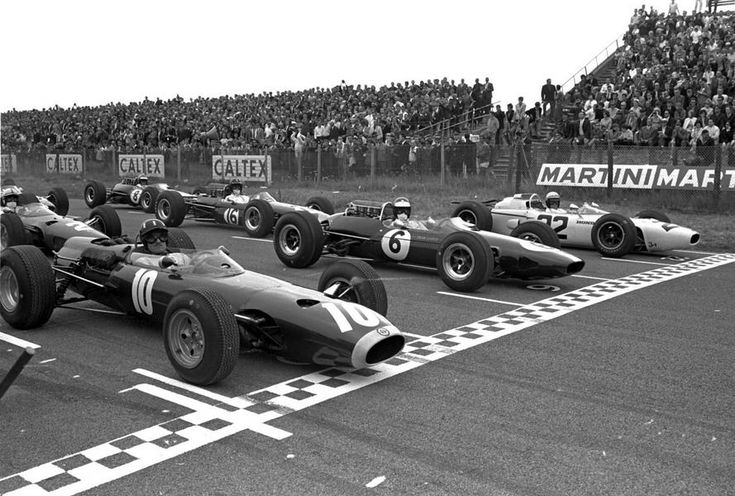

TECHNOLOGY
The Evolution of Formula 1 Cars
Discover how Formula 1 cars have evolved through decades of engineering and innovation.
APEX F1 BLOG
Explore stories about racing, technology, drivers, teams and the history of Formula 1.
Showing 8 blogs
Discover how Formula 1 cars have evolved through decades of engineering and innovation.

Learn how tyre compounds, degradation and pit stops influence the outcome of a race.

Explore how airflow, wings and downforce help Formula 1 cars achieve incredible performance.

A few seconds in the pit lane can completely change a driver's position during a race.

Take a journey through the major changes in Formula 1 engine technology.

Speed is only one part of Formula 1. Discover the skills required to become a great driver.

Understand how aerodynamic downforce helps F1 cars generate grip through high-speed corners.

Explore how Formula 1 has changed from its early days to the modern era of motorsport.
Try a different search term or category.